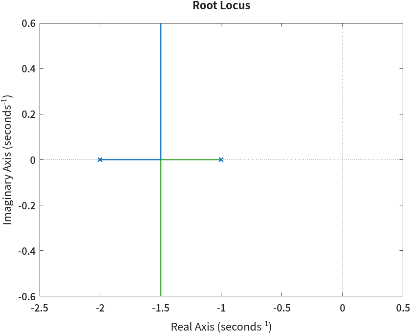
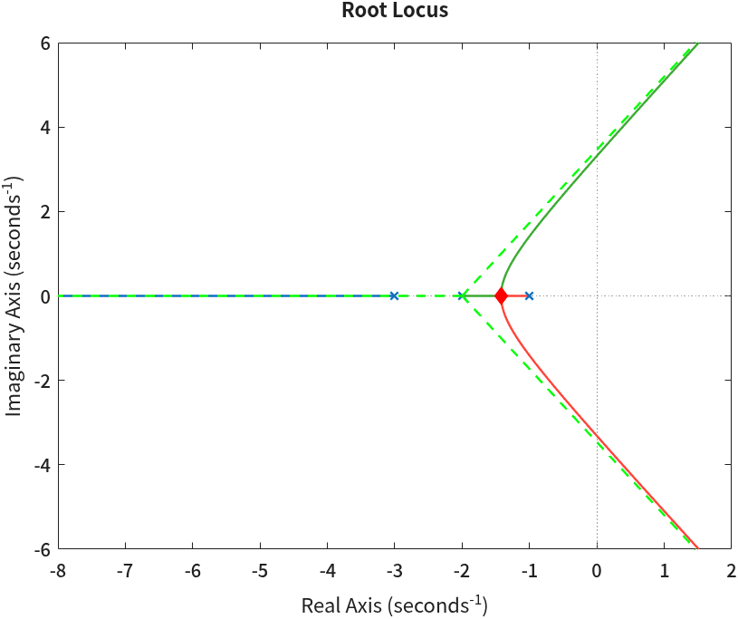
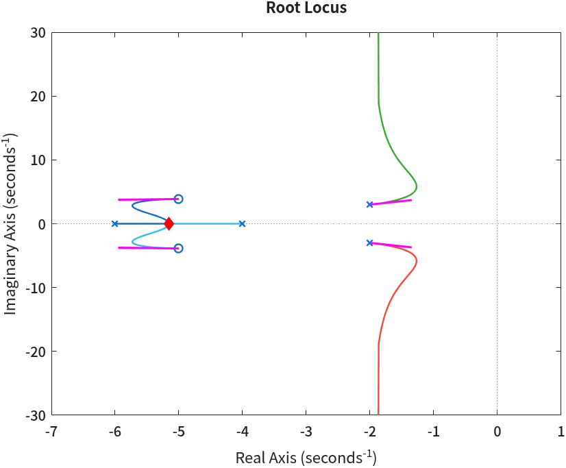
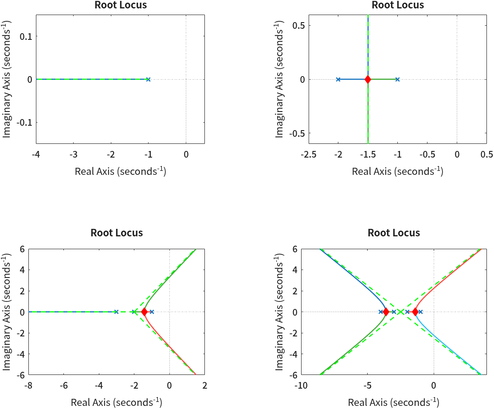
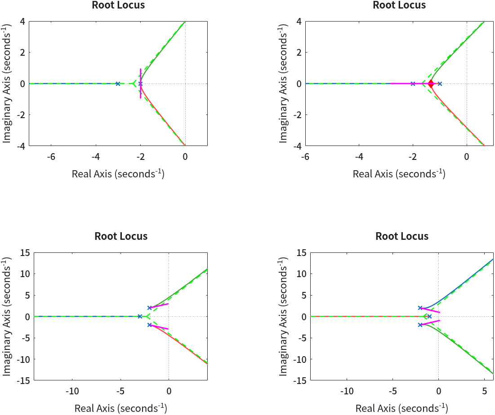
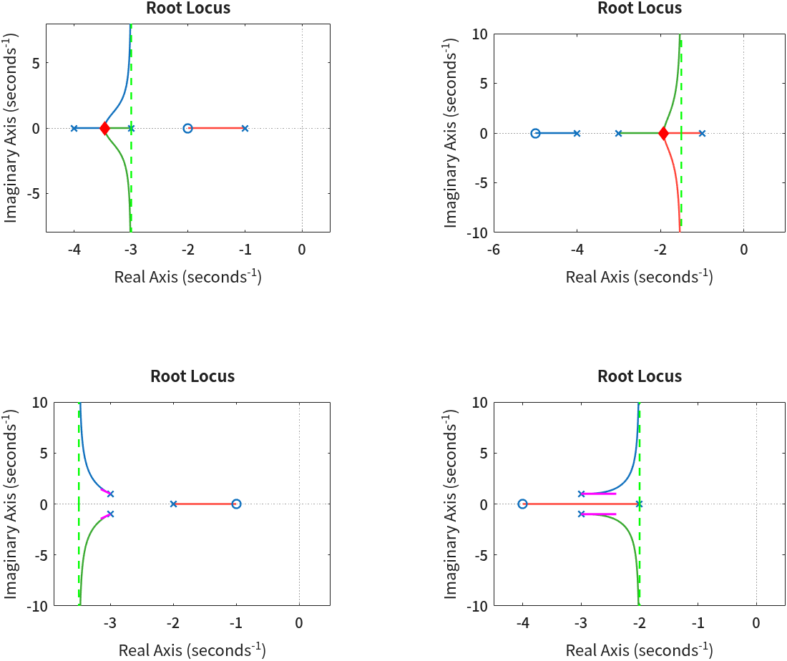
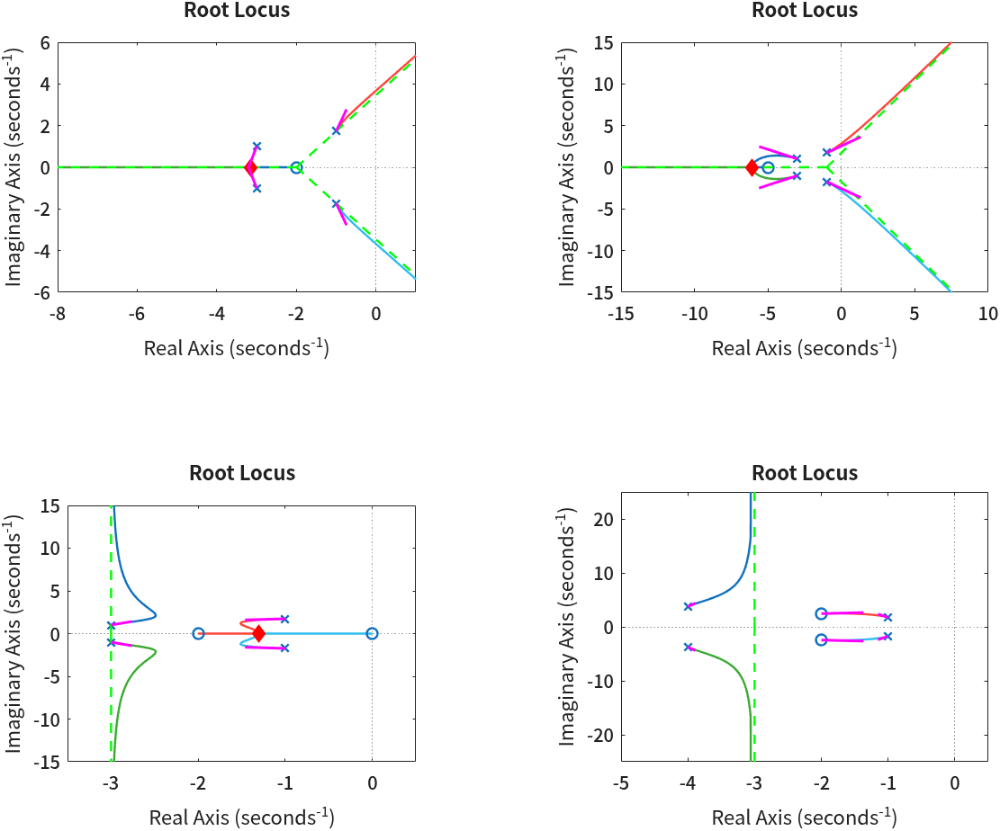
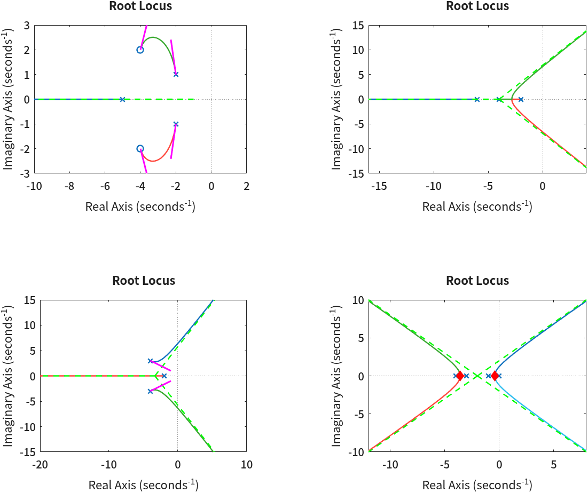

근궤적 그리기 — rlocus와 root_locus 함수
- 근궤적 그림의 선 하나하나는 정확히 무엇을 그린 것인가?
- 점근선·분기점·출발각 같은 작도 규칙은 어떤 식에서 나오고, MATLAB 함수로 어떻게 계산하나?
- 근궤적이 허수축을 넘는 \(K\)는 Routh 표로 어떻게 구하나?
- 규칙마다 만든 함수를 하나로 묶어 근궤적 그림 위에 겹쳐 그리려면?
- 극점이나 영점을 하나 더하면 근궤적의 모양은 어떻게 바뀌나?
4회에서는 전달함수를 만들고 feedback으로 폐루프를 만든 뒤, pole로 극점을 구해 안정도와 응답을 판단했다.
그런데 거기서는 이득이 늘 정해진 숫자였다. 실제 설계에서는 이득 \(K\)를 얼마로 할지가 질문이다.
\(K\)를 0에서 무한대까지 바꿔 가면 폐루프 극점이 s 평면 위를 움직이는데, 그 자취를 그린 것이 근궤적(root locus)이다.
앞부분에서는 rlocus로 근궤적을 그리고, 그 선이 정말 폐루프 극점의 자취인지 숫자로 확인한다.
가운데에서는 근궤적 작도 규칙(점근선·분기점·허수축 교차·출발각)을 하나씩 식으로 세우고, 규칙마다 그 계산을 하는 함수 파일을 만든다.
마지막에 그 함수들을 한데 묶은 root_locus 함수로 근궤적 위에 결과를 겹쳐 그리고, 극점·영점을 바꿔 가며 근궤적 모양이 어떻게 달라지는지 본다.
한 장 요약
왼쪽은 이 회차에서 쓰는 함수, 오른쪽은 그 함수가 이어지는 근궤적 규칙이다.
| 함수 | 하는 일 | 제어공학에서 쓰는 자리 |
|---|---|---|
rlocus(GH) | 개루프 전달함수 \(G(s)H(s)\)의 근궤적을 그린다 | \(1+KG(s)H(s)=0\)의 근이 \(K\)에 따라 움직이는 자취 |
evalfr(GH, s0) · angle · abs | 한 점에서 \(G(s_0)H(s_0)\)의 값·각도·크기 | 각도 조건과 크기 조건 |
find_asymptote(GH) | 점근선의 중심과 각도 | \(\sigma_a = (\sum p - \sum z)/(n-m)\), \(\theta_k = (2k+1)180^\circ/(n-m)\) |
tfdata · polyder · roots → find_break_point(GH) | \(D'N - DN' = 0\)의 근 중 \(K>0\)인 것 | 분기점 \(dK/ds=0\) |
syms · solve · subs → routh_table(c) | \(K\)가 들어간 특성방정식의 Routh 표 | 허수축 교차 — 안정 한계 \(K\)와 교차 주파수 \(\omega\) |
find_start_angle(GH) | 복소·겹친 극점의 출발각, 복소·겹친 영점의 도착각 | 각도 조건을 극점 바로 옆에 쓴 것 |
root_locus(GH, asymptote=1, break_point=1, start_angle=1) | rlocus 그림 위에 점근선·분기점·출발각을 겹쳐 그린다 | 손으로 작도한 결과를 MATLAB 그림과 맞대 보는 도구 |
rlocus 한 줄이면 그림은 나온다. 그러나 시험과 설계에서 필요한 것은
점근선이 어디서 만나는지, 어느 \(K\)에서 실수축을 떠나는지, 어느 \(K\)에서 불안정해지는지 같은 숫자다.
이 회차에서는 그 숫자를 규칙마다 함수로 계산하고, 마지막에 root_locus 함수로 그림 위에 겹쳐 본다.① 근궤적 — rlocus
단위 피드백 루프에 이득 \(K\)를 넣으면 폐루프 전달함수와 그 특성방정식은 다음과 같다.
$$ T(s) = \frac{K\,G(s)}{1 + K\,G(s)H(s)} $$ $$ 1 + K\,G(s)H(s) = 0 $$폐루프 극점은 이 특성방정식의 근이다. \(K\)가 바뀌면 근이 바뀐다. 이 근들이 \(K = 0 \to \infty\) 동안 그리는 곡선이 근궤적이다. MATLAB에서는 개루프 전달함수 \(G(s)H(s)\)만 넘겨 주면 된다.
s = tf('s');
GH = 1/((s+1)*(s+2)); % 개루프 전달함수 G(s)H(s)
rlocus(GH)🆕 이 코드에서 처음 나오는 것
- rlocus(GH)
- 개루프 전달함수
GH를 받아 \(1+K\,GH=0\)의 근궤적을 그린다. \(K\)는 함수가 알아서 0부터 충분히 큰 값까지 고른다. 여기서는 \(1/((s+1)(s+2))\)의 근궤적을 그렸다.×는 개루프 극점(\(K=0\)인 출발점),○는 개루프 영점이다.

그림의 선이 정말 폐루프 극점의 자취인지는 4회의 함수로 직접 확인할 수 있다. \(K\)를 몇 개 골라 feedback으로 폐루프를 만들고 pole로 극점을 구한다.
% K 를 바꿔 가며 폐루프 T(s) = K*GH / (1 + K*GH) 의 극점을 직접 구한다
for K = [0.01 0.1 0.25 1 5]
p = pole(feedback(K*GH, 1));
fprintf('K = %.2f 극점 = ', K)
fprintf('%.4f%+.4fj ', [real(p) imag(p)].')
fprintf('\n')
end명령 창 출력
K = 0.01 극점 = -1.9899+0.0000j -1.0101+0.0000j
K = 0.10 극점 = -1.8873+0.0000j -1.1127+0.0000j
K = 0.25 극점 = -1.5000+0.0000j -1.5000+0.0000j
K = 1.00 극점 = -1.5000+0.8660j -1.5000-0.8660j
K = 5.00 극점 = -1.5000+2.1794j -1.5000-2.1794j
출력을 위에서부터 읽으면 근궤적이 그대로 보인다. \(K=0.01\)에서는 극점이 원래 자리(-1, -2) 바로 옆에 있다.
\(K=0.1\)에서 둘이 가운데로 다가가고, \(K=0.25\)에서 둘 다 -1.5가 되어 만난다.
그 뒤로는 실수부가 -1.5로 고정된 채 허수부만 커진다 — 그림의 수직선이다.
처음 줄에 \(K=0\)을 쓰지 않은 데는 이유가 있다. feedback(0*GH, 1)은 전달함수가 통째로 0이 되어 극점이 하나도 나오지 않는다.
② 각도 조건과 크기 조건
그렇다면 s 평면의 어떤 점 \(s_0\)가 근궤적 위에 있는지는 어떻게 판정할까? 특성방정식을 고쳐 쓰면 된다.
$$ 1 + K\,G(s_0)H(s_0) = 0 \quad\Longleftrightarrow\quad K\,G(s_0)H(s_0) = -1 $$\(K\)는 양의 실수이고 \(-1\)은 크기 1, 각도 180°인 복소수다. 그래서 위 식은 두 조건으로 나뉜다.
$$ \angle G(s_0)H(s_0) = (2k+1)\cdot 180^\circ \qquad \text{(각도 조건)} $$ $$ K = \frac{1}{\lvert G(s_0)H(s_0)\rvert} \qquad \text{(크기 조건)} $$각도 조건이 근궤적의 모양을 정하고, 크기 조건이 그 위의 눈금(\(K\))을 정한다. \(G(s)H(s) = N(s)/D(s)\)를 영점 \(z_i\)와 극점 \(p_j\)로 인수분해하면 각도는 벡터 각의 합과 차가 된다.
$$ \angle G(s_0)H(s_0) = \sum_{i=1}^{m} \angle (s_0 - z_i) \;-\; \sum_{j=1}^{n} \angle (s_0 - p_j) $$\(s_0 = -1.5 + j2\)를 넣어 보자. \(s_0+1 = -0.5+j2\), \(s_0+2 = 0.5+j2\)이므로
$$ (s_0+1)(s_0+2) = (-0.5+j2)(0.5+j2) = -0.25 - j1 + j1 + j^2 4 = -4.25 $$ $$ G(s_0)H(s_0) = \frac{1}{-4.25} = -0.2353, \qquad \angle = 180^\circ, \qquad K = \frac{1}{0.2353} = 4.25 $$각도가 180°이므로 이 점은 근궤적 위에 있고, 그 점에 극점을 두려면 \(K=4.25\)여야 한다. MATLAB으로 같은 계산을 한다.
s0 = -1.5 + 2j; % 근궤적 위에 있는지 알아볼 점
G0 = evalfr(GH, s0) % 그 점에서 GH(s0) 의 값 (복소수)
phase_deg = rad2deg(angle(G0)) % 각도 조건: 180도 (의 홀수 배) 인가
K0 = 1/abs(G0) % 크기 조건: |K*GH(s0)| = 1 이 되는 K
pole(feedback(K0*GH, 1)) % 그 K 로 피드백을 걸면 s0 가 정말 극점인가명령 창 출력
G0 =
-0.2353
phase_deg =
180
K0 =
4.2500
ans =
-1.5000 + 2.0000i
-1.5000 - 2.0000i
G0가 -0.2353, phase_deg가 180, K0가 4.25 — 손계산과 같다.
마지막 줄에서 \(K=4.25\)로 피드백을 걸었더니 폐루프 극점이 정확히 \(-1.5 \pm j2\)로 나왔다.
evalfr와 angle은 4회와 2회에서 쓴 함수다. 여기서는 근궤적의 정의를 숫자로 확인하는 도구로 쓰였다.
📐 이론과 잇기 — 각도 조건이 모양을, 크기 조건이 \(K\)를
시험에서 「점 \(s_0\)가 근궤적 위에 있는가」를 물으면 각도 조건만 확인하면 된다. 「그 점에서의 \(K\)는?」을 물으면 크기 조건을 쓴다.
MATLAB 한 줄씩으로 옮기면 rad2deg(angle(evalfr(GH, s0)))가 ±180이 나오는지, 1/abs(evalfr(GH, s0))가 얼마인지다.
6회에서 성능 조건을 만족하는 점을 고른 뒤 그 점의 \(K\)를 구할 때 바로 이 두 줄을 다시 쓴다.
③ 근궤적 작도 규칙
MATLAB이 없던 시절에는 각도 조건을 만족하는 점을 하나하나 찾을 수 없었으니, 각도 조건에서 모양을 빨리 그리는 규칙을 끌어냈다. 지금도 이 규칙은 쓸모가 있다. 그림을 보고 왜 그런 모양인지 설명하는 말이 되고, 극점·영점을 어디에 더해야 근궤적이 원하는 쪽으로 휘는지 짐작하게 해 준다(7회 PID 설계가 바로 이 짐작에서 출발한다).
예제는 \(G(s)H(s) = \dfrac{1}{(s+1)(s+2)(s+3)}\) 하나로 끝까지 간다. 극점 셋(-1, -2, -3), 영점 없음, 즉 \(n=3,\ m=0\)이다.
시작과 끝. 근궤적의 가지는 \(n\)개다. \(K=0\)에서는 \(D(s)+K\,N(s)=D(s)=0\)이므로 개루프 극점에서 출발하고, \(K\to\infty\)에서는 \(N(s)=0\)에 다가가므로 개루프 영점에서 끝난다. 영점이 \(m\)개뿐이니 남은 \(n-m\)개 가지는 무한대로 간다.
실수축 구간
실수축 위의 점 \(\sigma\)에서 각도를 따지면 이렇게 된다. 복소 극점·영점은 켤레 쌍이라 각도가 \(+\theta\)와 \(-\theta\)로 서로 지운다. \(\sigma\)보다 왼쪽의 실수 극점·영점은 벡터 \(\sigma - p\)가 오른쪽을 향하므로 0°다. 오른쪽에 있는 것만 180°씩 보탠다. 그래서 오른쪽에 있는 실수 극점과 영점의 개수 합이 홀수인 구간만 각도 조건을 만족한다.
예제에서는 \(-1\)과 \(-2\) 사이(오른쪽에 극점 1개), 그리고 \(-3\)보다 왼쪽(오른쪽에 3개)이 근궤적이다. \(-2\)와 \(-3\) 사이는 오른쪽에 2개라 근궤적이 아니다.
규칙마다 함수 하나
나머지 규칙은 숫자를 계산해야 한다. 이 회차에서는 규칙 하나마다 식을 세우고, 그 식을 계산하는 함수 파일을 하나씩 만든다. 함수 파일은 4회에서처럼 파일 이름을 함수 이름과 같게 해서 현재 폴더에 저장한다. 마지막 ⑧절에서 이 함수들을 한데 묶어 근궤적 그림 위에 겹쳐 그린다.
| 절 | 규칙 | 함수 파일 | 돌려주는 값 |
|---|---|---|---|
| ④ | 점근선 | find_asymptote.m | 점근선 중심 \(\sigma_a\), 각도 \(\theta_k\) |
| ⑤ | 분기점 | find_break_point.m | 분기점 위치와 그때의 \(K\) |
| ⑥ | 허수축 교차 | routh_table.m | Routh 표 — 안정 한계 \(K\)와 교차 주파수 \(\omega\) |
| ⑦ | 출발각 · 도착각 | find_start_angle.m | 복소 극점의 출발각, 복소 영점의 도착각 |
| ⑧ | 한데 묶기 | root_locus.m | 근궤적 위에 ④⑤⑦의 결과를 그린 그림 |
④ 점근선 — find_asymptote
무한대로 가는 \(n-m\)개의 가지는 멀리 가면 어떤 모양이 될까? 직선에 붙는다. 그 직선이 점근선이고, 실수축 위 한 점에서 출발해 일정한 각도로 뻗는다.
$$ \sigma_a = \frac{\sum p_j - \sum z_i}{n - m}, \qquad \theta_k = \frac{(2k+1)\cdot 180^\circ}{n - m},\quad k = 0, 1, \dots, n-m-1 $$예제에 넣으면 다음과 같다.
$$ \sigma_a = \frac{(-1) + (-2) + (-3) - 0}{3 - 0} = -2, \qquad \theta = 60^\circ,\ 180^\circ,\ 300^\circ $$
300°는 -60°와 같은 방향이다. 두 식을 그대로 함수 파일로 옮긴다. 극점과 영점은 4회의 pole·zero로 구한다.
function [sigma, ang] = find_asymptote(GH)
% 근궤적의 점근선 — 실수축과 만나는 점 sigma 와 각도 ang(deg)를 구한다 (5회).
% sigma = (극점의 합 - 영점의 합) / (n - m)
% ang = (2k+1) * 180 / (n - m), k = 0, 1, ..., n-m-1
p = pole(GH);
z = zero(GH);
q = numel(p) - numel(z); % 무한대로 가는 가지의 수 n - m
if q == 0
sigma = [];
ang = [];
fprintf('점근선: 없다 (극점 수 = 영점 수 — 모든 가지가 영점에서 끝난다)\n')
return
end
sigma = real(sum(p) - sum(z)) / q;
ang = (2*(0:q-1) + 1) * 180 / q;
fprintf('점근선: %d개, 중심 = %.4f, 각도 = %s deg\n', q, sigma, num2str(ang))
end🆕 이 코드에서 처음 나오는 것
- numel(x)
- 원소의 개수(number of elements). 여기서는 극점 수 \(n\)과 영점 수 \(m\)을 셌다. 벡터에서는
length와 같다. - return
- 함수를 그 자리에서 끝내고 돌아간다. 여기서는 극점 수와 영점 수가 같아 점근선이 없을 때, 0으로 나누기 전에 빠져나왔다.
- num2str(x)
- 숫자(벡터도 된다)를 글자로 바꾼다. 개수가 정해지지 않은 각도 목록을
fprintf의%s자리에 한 번에 넣으려고 썼다.
예제에 돌린다. 이 절부터 ⑥절까지는 같은 GH3를 이어 쓴다.
GH3 = 1/((s+1)*(s+2)*(s+3)); % 극점 셋 -1, -2, -3 · 영점 없음
[sigma, ang] = find_asymptote(GH3);명령 창 출력
점근선: 3개, 중심 = -2.0000, 각도 = 60 180 300 deg
함수가 찍은 한 줄을 식과 맞대 본다. 점근선이 3개(\(n-m=3\)), 중심이 -2, 각도가 60·180·300이다.
값은 출력 변수 sigma와 ang에도 들어 있어서 뒤에서 그림을 그릴 때 쓸 수 있다.
⑤ 분기점 — find_break_point
\(-1\)과 \(-2\)에서 출발한 두 가지는 실수축 위에서 서로 다가오다 한 점에서 만나 위아래로 갈라진다. 이 점이 분기점(breakaway point)이다. 그 점은 어디일까? 특성방정식을 \(K\)에 대해 풀면 실수축 위에서 \(K\)는 \(s\)의 함수가 된다.
$$ K(s) = -\frac{D(s)}{N(s)} $$두 극점 사이에서 \(K\)는 0에서 올라갔다 다시 0으로 내려온다. 가지가 갈라지는 곳은 그 꼭대기, 즉 \(dK/ds = 0\)인 점이다. 분수의 미분 공식을 쓰면 분모 \(N^2\)은 0이 될 수 없으니 분자만 0이면 된다.
$$ \frac{dK}{ds} = -\frac{D'(s)N(s) - D(s)N'(s)}{N(s)^2} = 0 \quad\Longleftrightarrow\quad D'(s)N(s) - D(s)N'(s) = 0 $$예제에서는 \(N=1\), \(D = s^3+6s^2+11s+6\)이므로
$$ D'(s) = 3s^2 + 12s + 11 = 0 \quad\Longrightarrow\quad s = -2 \pm \frac{1}{\sqrt{3}} = -1.4226,\ -2.5774 $$ $$ K(-1.4226) = 0.3849 > 0, \qquad K(-2.5774) = -0.3849 < 0 $$두 후보 중 \(K\)가 양수인 \(-1.4226\)만 분기점이다. \(-2.5774\)는 \(-2\)와 \(-3\) 사이 — 앞에서 근궤적이 아니라고 한 구간 — 에 있고, 그래서 \(K\)가 음수로 나온다. \(dK/ds=0\)의 근이 전부 분기점은 아니다. 후보마다 \(K\)를 다시 계산해서 양의 실수인지 확인해야 한다.
함수는 이 순서를 그대로 따른다. 다항식 \(D\)와 \(N\)의 계수를 꺼내고, \(D'N - DN'\)을 만들어 그 근(후보)을 구한 뒤, 후보마다 \(K\)를 계산해 걸러 낸다.
다항식 함수 roots와 polyval은 2회에서 나왔다.
function [sb, Kb] = find_break_point(GH)
% 근궤적의 분기점 — 실수축 위에서 dK/ds = 0 이고 K > 0 인 점 sb 와 그때의 이득 Kb (5회).
% 1 + K*N(s)/D(s) = 0 이므로 K(s) = -D(s)/N(s)
% dK/ds = 0 <=> D'(s)N(s) - D(s)N'(s) = 0
[num, den] = tfdata(GH, 'v');
num = num(find(num ~= 0, 1):end); % tfdata 가 분자 앞에 채운 0 을 뗀다
[dnum, ~] = polyder(den, num); % d/ds (D/N) 의 분자 = D'N - DN'
cand = roots(dnum); % 분기점 후보
sb = [];
Kb = [];
for k = 1:numel(cand)
s0 = cand(k);
if abs(imag(s0)) > 1e-6 % 복소수 후보 — 실수축 위가 아니다
continue
end
s0 = real(s0);
K0 = -polyval(den, s0) / polyval(num, s0);
if abs(K0) < 1e-9
fprintf(' 후보 s = %.4f : K = 0 — 겹친 극점 자리다 (출발각으로 본다)\n', s0)
elseif K0 < 0
fprintf(' 후보 s = %.4f : K = %.4f < 0 — 근궤적 위가 아니다\n', s0, K0)
else
fprintf('분기점: s = %.4f, K = %.4f\n', s0, K0)
sb(end+1, 1) = s0;
Kb(end+1, 1) = K0;
end
end
if isempty(sb)
fprintf('분기점: 없다\n')
end
end🆕 이 코드에서 처음 나오는 것
- [num, den] = tfdata(GH, 'v')
- 전달함수에서 분자·분모 계수를 꺼낸다.
'v'를 붙이면 보통 행 벡터로 준다. 분자는 분모와 길이를 맞추느라 앞에 0을 채워 주므로([0 0 0 1]), 여기서는 앞의 0을 떼어 \(N(s)=1\)만 남겼다. - find(x, 1)
- 조건이 참인 원소의 인덱스를 찾는다. 두 번째 인자 1은 첫 번째 하나만 찾으라는 뜻이다. 여기서는 처음으로 0이 아닌 계수의 자리를 찾았다.
- [q, d] = polyder(b, a)
- 인자가 하나면 다항식의 미분, 둘이면 분수 \(b/a\)의 미분을 분자
q·분모d로 준다. 여기서는polyder(den, num)으로 \(\frac{d}{ds}(D/N)\)의 분자 \(D'N - DN'\)을 구했다 — 분기점 식의 좌변 그대로다. - [dnum, ~] = …
- 출력 자리에
~를 쓰면 그 출력은 받지 않고 버린다. 분기점에는 분자만 필요해서 분모를 버렸다. - continue
- 반복문 안에서 이번 차례의 나머지를 건너뛰고 다음 차례로 넘어간다. 여기서는 복소수 후보(실수축 위가 아닌 점)를 건너뛰었다.
- sb(end+1, 1) = s0 · isempty(sb)
end+1자리에 넣으면 벡터 끝에 원소가 하나 붙는다. 분기점이 몇 개일지 모르니 빈 벡터[]에서 시작해 찾을 때마다 붙였다.isempty는 비어 있으면 참이다 — 하나도 못 찾았을 때 「없다」고 찍는 데 썼다.
[sb, Kb] = find_break_point(GH3);명령 창 출력
후보 s = -2.5774 : K = -0.3849 < 0 — 근궤적 위가 아니다
분기점: s = -1.4226, K = 0.3849두 줄이 손계산의 두 후보다. -2.5774는 \(K = -0.3849\)라 버렸다는 줄이 들여쓰기로 남고, -1.4226만 분기점으로 찍혔다.
⚠️ 계산으로 구한 값을 == 0으로 비교하지 않는다
후보가 실수인지 볼 때 imag(s0) == 0으로 쓰고 싶어질 수 있다. 그런데 roots는 수치 계산이라 실수인 근에도
\(10^{-16}\) 같은 아주 작은 허수부가 붙어 나올 수 있다. 그러면 진짜 분기점이 「복소수」로 밀려나 버린다.
그래서 함수에서는 abs(imag(s0)) > 1e-6처럼 충분히 작으면 0으로 본다. 계산으로 구한 값끼리 같은지 볼 때는 늘 이렇게 여유를 둔다.
⑥ 허수축 교차 — Routh 표
점근선이 ±60°이니 위아래 두 가지는 \(K\)를 키우면 언젠가 허수축을 넘어 오른쪽 반평면으로 간다. 넘는 순간의 \(K\)가 안정 한계다. 그 \(K\)는 어떻게 구할까? 폐루프 특성방정식에 Routh 판별법을 쓰면 된다.
예제의 특성방정식은 다음과 같다.
$$ 1 + K\,G(s)H(s) = 0 \quad\Longleftrightarrow\quad (s+1)(s+2)(s+3) + K = 0 $$ $$ s^3 + 6s^2 + 11s + (6 + K) = 0 $$Routh 표는 계수를 두 행에 번갈아 적는 데서 시작한다. 첫 행(\(s^3\))에는 \(s^3\)·\(s^1\)의 계수 1, 11을, 둘째 행(\(s^2\))에는 \(s^2\)·\(s^0\)의 계수 6, \(6+K\)를 적는다. 셋째 행부터는 바로 위 두 행으로 계산한다.
$$ b_1 = \frac{6 \cdot 11 - 1 \cdot (6 + K)}{6} = \frac{60 - K}{6} $$ $$ c_1 = \frac{b_1 \cdot (6 + K) - 6 \cdot 0}{b_1} = 6 + K $$| 행 | 첫 열 | 둘째 열 |
|---|---|---|
| \(s^3\) | 1 | 11 |
| \(s^2\) | 6 | \(6 + K\) |
| \(s^1\) | \(\dfrac{60 - K}{6}\) | 0 |
| \(s^0\) | \(6 + K\) |
Routh 판별법에 따르면 첫 열의 부호가 바뀌는 횟수가 오른쪽 반평면에 있는 극점의 수다. 첫 열 \(1,\ 6,\ \frac{60-K}{6},\ 6+K\)가 모두 양수이려면 \(K < 60\)이어야 한다(\(K>0\)이므로 \(6+K\)는 늘 양수다). \(K > 60\)이면 \(s^1\) 행이 음수가 되어 부호가 두 번 바뀌므로, 극점 두 개가 오른쪽 반평면에 있다.
경계인 \(K = 60\)에서는 \(s^1\) 행이 통째로 0이 된다. 이때 바로 위 \(s^2\) 행의 계수로 만든 식을 보조방정식이라고 하고, 그 근이 허수축 위의 극점이다.
$$ 6s^2 + (6 + 60) = 6s^2 + 66 = 0 \quad\Longrightarrow\quad s = \pm j\sqrt{11} = \pm j3.3166 $$정리하면 근궤적은 \(K = 60\)에서 \(\omega = 3.3166\)으로 허수축을 넘는다. \(K < 60\)이면 안정, \(K > 60\)이면 불안정이다.
🆕 처음 나오는 이름 — Routh
Routh(라우스)는 사람 이름이다. 19세기 영국 수학자 Edward John Routh가 1876년에 이 표를 만드는 방법을 내놓았다. 비슷한 시기에 독일의 Adolf Hurwitz(후르비츠)가 같은 조건을 행렬식으로 정리해서 두 이름을 붙여 Routh-Hurwitz 판별법이라고도 한다.
표 계산을 함수 파일로 만든다. 행을 하나씩 내려가며 같은 계산을 되풀이하므로 반복문 두 개면 된다. 문제는 계수에 \(K\) 같은 문자가 들어간다는 점이다. 숫자만 다루는 보통 변수로는 \(\frac{60-K}{6}\)을 담을 수 없으므로, 기호 계산을 하는 Symbolic Math Toolbox(1회 설치 목록)를 쓴다.
function R = routh_table(c)
% 특성방정식의 계수 c = [a_n ... a_1 a_0] (높은 차수부터)로 Routh 표를 만든다 (5회).
% R 의 첫 행이 s^n 행, 마지막 행이 s^0 행이다.
% c 에 syms 로 만든 기호(K 등)가 들어 있으면 표도 기호로 나온다.
% 첫 열에 0 이 생기는 특수한 경우는 다루지 않는다.
n = numel(c) - 1; % 차수
cols = ceil((n + 1) / 2); % 열의 수
R = zeros(n + 1, cols) * c(1); % c 가 기호이면 R 도 기호 행렬이 되게 c(1)을 곱해 둔다
R(1, 1:numel(c(1:2:end))) = c(1:2:end); % s^n 행: a_n, a_(n-2), ...
R(2, 1:numel(c(2:2:end))) = c(2:2:end); % s^(n-1) 행: a_(n-1), a_(n-3), ...
for i = 3:n+1
for j = 1:cols-1
% 바로 위 두 행으로 만든 2x2 행렬식을 위 행의 첫 원소로 나눈다
R(i, j) = (R(i-1, 1)*R(i-2, j+1) - R(i-2, 1)*R(i-1, j+1)) / R(i-1, 1);
end
end
if isa(R, 'sym')
R = simplify(R);
end
end🆕 이 코드에서 처음 나오는 것
- c(1:2:end)
- 1번째부터 하나 건너 끝까지(1, 3, 5, …번째) 원소.
c(2:2:end)는 2, 4, 6, …번째다. 계수를 두 행에 번갈아 적는 일을 이 두 줄로 했다. - ceil(x)
- 올림. 3차식이면 계수가 4개라 열이 \(4/2 = 2\)개, 4차식이면 계수 5개라 \(\lceil 5/2 \rceil = 3\)개다.
- zeros(…) * c(1)
- 0으로 채운 표에 첫 계수를 곱해 둔 것이다. 값은 그대로 0이지만,
c가 기호면 표도 기호 행렬이 되어 \(K\)가 들어간 식을 칸에 담을 수 있다. - isa(R, 'sym') · simplify(R)
isa는 변수의 종류를 묻는다. 표가 기호 행렬일 때만simplify로 각 칸의 식을 정리했다. 숫자 표에는 정리할 것이 없다.
예제의 특성방정식 계수는 tfdata로 바로 만든다. tfdata는 분자 앞에 0을 채워 분모와 길이를 맞춰 주므로(⑤절)
\(D(s) + K\,N(s)\)의 계수는 den + K*num 한 줄이다.
syms K % K 를 숫자가 아닌 기호로 둔다
[num, den] = tfdata(GH3, 'v') % 분자는 앞에 0 을 채워 분모와 길이가 같다
c = den + K*num % 특성방정식 D(s) + K N(s) = 0 의 계수
R = routh_table(c)
K_cross = solve(R(3,1) == 0, K) % s^1 행의 첫 원소가 0 이 되는 K
aux = subs(R(2,:), K, K_cross) % 그때의 s^2 행 → 보조방정식 6 s^2 + 66 = 0
w_cross = roots(double([aux(1) 0 aux(2)]))
pole(feedback(double(K_cross)*GH3, 1)) % 그 K 로 피드백을 걸면 극점이 허수축 위에 있나명령 창 출력
num =
0 0 0 1
den =
1 6 11 6
c =
[1, 6, 11, K + 6]
R =
[ 1, 11]
[ 6, K + 6]
[10 - K/6, 0]
[ K + 6, 0]
K_cross =
60
aux =
[6, 66]
w_cross =
0.0000 + 3.3166i
0.0000 - 3.3166i
ans =
-6.0000 + 0.0000i
-0.0000 + 3.3166i
-0.0000 - 3.3166i🆕 이 코드에서 처음 나오는 것 — Symbolic Math Toolbox
- syms K
- 숫자가 아니라 기호로 다루는 변수
K를 만든다. 이후K가 들어간 계산은 값이 아니라 식으로 남는다. 여기서는den + K*num이[1, 6, 11, K + 6]이라는 식의 벡터가 되었다. - solve(식 == 0, K)
- 방정식을
K에 대해 푼다.==는 「같다」는 방정식을 만드는 기호다. 여기서는 \(s^1\) 행 첫 원소 \(10 - K/6 = 0\)을 풀어 60을 얻었다. - subs(식, K, 값)
- 식의
K에 값을 넣는다. 여기서는 \(s^2\) 행[6, K + 6]에 60을 넣어 보조방정식의 계수[6, 66]을 만들었다. - double(x)
- 기호로 된 숫자를 보통 숫자로 바꾼다.
roots와feedback은 보통 숫자를 받으므로 넘기기 전에 바꿨다.
출력을 손계산과 맞대 본다. c가 특성방정식 계수 \([1,\ 6,\ 11,\ K+6]\)이고, R이 위의 Routh 표다.
셋째 행의 10 - K/6은 \(\frac{60-K}{6}\)을 풀어 쓴 것이다. K_cross가 60,
보조방정식 \(6s^2 + 66 = 0\)의 근 w_cross가 \(\pm j3.3166\)이다.
마지막 줄에서 \(K = 60\)으로 피드백을 걸었더니 폐루프 극점 두 개가 정확히 허수축 위에 놓였다.
보조방정식을 [aux(1) 0 aux(2)]로 만든 것은 \(s^2\) 행의 두 칸이 \(s^2\)과 \(s^0\)의 계수라서 \(s^1\) 자리에 0을 끼워야 하기 때문이다.
이 모양은 보조방정식이 \(s^2\) 행에서 나오는 3차 특성방정식에서만 맞다. 차수가 다르면 0이 된 행의 바로 위 행으로 같은 일을 한다.
⑦ 출발각 · 도착각 — find_start_angle
복소 극점에서는 가지가 어느 방향으로 출발하는지가 모양을 크게 바꾼다. 그 방향은 어떻게 구할까? 극점 \(p_d\)에 아주 가까운 점에 각도 조건을 쓰면, 다른 극점·영점에서 본 각도는 \(p_d\)에서 본 것과 거의 같고, \(p_d\) 자신이 만드는 각도만 미지수(출발각 \(\theta_d\))로 남는다.
$$ \sum_i \angle(p_d - z_i) - \sum_{j \ne d} \angle(p_d - p_j) - \theta_d = 180^\circ \quad\Longrightarrow\quad \theta_d = \sum_i \angle(p_d - z_i) - \sum_{j \ne d} \angle(p_d - p_j) - 180^\circ $$영점 \(z_a\)로 들어오는 도착각 \(\theta_a\)는 같은 논리로 부호만 바뀐다.
$$ \theta_a = 180^\circ + \sum_{j} \angle(z_a - p_j) - \sum_{i \ne a} \angle(z_a - z_i) $$지금까지의 예제에는 복소 극점이 없으니 다른 시스템을 쓴다. \(G(s)H(s) = \dfrac{s^2+10s+40}{(s^2+4s+13)(s^2+10s+24)}\)이고, 극점은 \(-2\pm j3\), \(-4\), \(-6\), 영점은 \(-5\pm j3.873\)이다. 극점 \(-2+j3\)에서의 출발각을 위 식대로 하나씩 계산한다.
% 극점 -2+j3 에서의 출발각을 각도 조건으로 손계산하듯 구한다
GH4 = (s^2+10*s+40)/((s^2+4*s+13)*(s^2+10*s+24));
p = pole(GH4)
z = zero(GH4)
p0 = -2 + 3j; % 출발각을 구할 극점
zero_ang = rad2deg(angle(p0 - z)) % 영점 → p0 벡터의 각
others = p(abs(p - p0) > 1e-6); % p0 를 뺀 나머지 극점
pole_ang = rad2deg(angle(p0 - others)) % 나머지 극점 → p0 벡터의 각
theta = sum(zero_ang) - sum(pole_ang) - 180 % 각도 조건에서 출발각
theta = mod(theta + 180, 360) - 180 % -180 ~ 180 사이로 접기명령 창 출력
p =
-6.0000 + 0.0000i
-2.0000 + 3.0000i
-2.0000 - 3.0000i
-4.0000 + 0.0000i
z =
-5.0000 + 3.8730i
-5.0000 - 3.8730i
zero_ang =
-16.2247
66.4191
pole_ang =
36.8699
90.0000
56.3099
theta =
-312.9854
theta =
47.0146출력의 각도를 식에 넣으면 다음과 같다.
$$ \theta_d = \underbrace{(-16.22^\circ + 66.42^\circ)}_{\text{영점 둘}} - \underbrace{(36.87^\circ + 90.00^\circ + 56.31^\circ)}_{\text{나머지 극점 셋}} - 180^\circ = -312.99^\circ \;\equiv\; 47.01^\circ $$
\(-312.99^\circ\)와 \(47.01^\circ\)는 360°만큼 차이 나는 같은 방향이다. 마지막 줄의 mod(theta + 180, 360) - 180이 각도를 \(-180^\circ\)~\(180^\circ\)로 접었다.
🆕 이 코드에서 처음 나오는 것
- mod(a, 360)
- \(a\)를 360으로 나눈 나머지. 음수도 0~360 사이로 돌려준다. 180을 더해 접고 다시 빼면 \(-180\)~\(180\) 사이가 된다 — \(-312.99 + 180 = -132.99\), 나머지 227.01, 빼면 47.01.
이 계산을 모든 복소 극점과 복소 영점에 되풀이하는 함수를 만든다. 한 파일 안에 함수를 여러 개 둘 수 있고,
맨 위 함수만 밖에서 부를 수 있다. 아래쪽의 angle_deg, wrap180 같은 것은 이 파일 안에서만 쓰는 로컬 함수다.
group_roots가 하는 일은 바로 아래 ⚠️ 상자에서 본다.
function [dep, arr] = find_start_angle(GH)
% 복소 극점의 출발각과 복소 영점의 도착각을 구한다 (5회).
% dep = [극점, 출발각(deg)], arr = [영점, 도착각(deg)] — 한 줄에 하나씩
% 출발각: r*th = (영점에서 본 각의 합) - (다른 극점에서 본 각의 합) - 180 - 360k
% 도착각: r*th = (극점에서 본 각의 합) - (다른 영점에서 본 각의 합) + 180 + 360k
% r 은 그 자리에 겹친 근의 수, k = 0, ..., r-1 (r = 1 이면 k = 0 하나)
[pu, pm] = group_roots(pole(GH)); % 겹친 근은 한 자리로 묶고 겹친 수를 센다
[zu, zm] = group_roots(zero(GH));
dep = zeros(0, 2);
arr = zeros(0, 2);
for i = 1:numel(pu)
if imag(pu(i)) == 0 && pm(i) == 1 % 실수축 위 홑극점은 실수축을 따라 출발한다
continue
end
other = [1:i-1, i+1:numel(pu)];
a = sum(angle_deg(pu(i) - zu) .* zm) - sum(angle_deg(pu(i) - pu(other)) .* pm(other)) - 180;
for k = 0:pm(i)-1
th = wrap180((a - 360*k) / pm(i));
fprintf('출발각: 극점 %s → %.2f deg\n', label(pu(i), pm(i)), th)
dep(end+1, :) = [pu(i), th];
end
end
for i = 1:numel(zu)
if imag(zu(i)) == 0 && zm(i) == 1 % 실수축 위 홑영점은 실수축을 따라 들어온다
continue
end
other = [1:i-1, i+1:numel(zu)];
a = sum(angle_deg(zu(i) - pu) .* pm) - sum(angle_deg(zu(i) - zu(other)) .* zm(other)) + 180;
for k = 0:zm(i)-1
th = wrap180((a + 360*k) / zm(i));
fprintf('도착각: 영점 %s → %.2f deg\n', label(zu(i), zm(i)), th)
arr(end+1, :) = [zu(i), th];
end
end
end
function a = angle_deg(v)
% 복소수 v 의 각도(deg)
a = rad2deg(angle(v));
end
function a = wrap180(a)
% 각도를 -180 ~ 180 사이로 접는다 (-312.99 → 47.01)
a = mod(a + 180, 360) - 180;
if abs(a + 180) < 1e-9, a = 180; end % -180 과 180 은 같은 방향 — 180 으로 쓴다
if abs(a) < 1e-9, a = 0; end % -0.00 이 찍히지 않게
end
function [u, m] = group_roots(r)
% 계산으로 구한 겹친 근은 -2 ± 1e-8j 처럼 조금씩 흩어진다.
% 아주 가까운 근끼리 묶어 자리 u 와 겹친 수 m 을 돌려준다.
u = [];
m = [];
used = false(numel(r), 1);
for i = 1:numel(r)
if used(i), continue, end
same = ~used & abs(r - r(i)) < 1e-4 * max(1, abs(r(i)));
used = used | same;
u(end+1, 1) = mean(r(same));
m(end+1, 1) = sum(same);
end
on_axis = abs(imag(u)) < 1e-6 * max(1, abs(u));
u(on_axis) = real(u(on_axis)); % 실수축 위의 근은 허수부를 정확히 0 으로
end
function str = label(r, m)
% 근 r 을 글자로 — 실수면 「-2.0000」, 복소수면 「-2.0000+3.0000j」, 겹쳤으면 「 (2중)」을 붙인다
if imag(r) == 0
str = sprintf('%.4f', r);
else
str = sprintf('%.4f%+.4fj', real(r), imag(r));
end
if m > 1
str = sprintf('%s (%d중)', str, m);
end
end[dep, arr] = find_start_angle(GH4);명령 창 출력
출발각: 극점 -2.0000+3.0000j → 47.01 deg
출발각: 극점 -2.0000-3.0000j → -47.01 deg
도착각: 영점 -5.0000+3.8730j → -172.64 deg
도착각: 영점 -5.0000-3.8730j → 172.64 deg
첫 줄의 47.01이 위에서 한 줄씩 구한 값과 같다. 켤레 극점 \(-2-j3\)은 거울에 비친 듯 -47.01°로 출발하고,
복소 영점 \(-5\pm j3.873\)으로는 ∓172.64° — 거의 수평으로 — 들어온다. 값은 dep, arr에 [위치, 각도] 한 줄씩 담겨 있다.
⚠️ 겹친 극점 — 계산으로 구하면 아주 작은 허수부가 붙는다
\(G(s)H(s) = \dfrac{s+1}{(s+3)(s+2)^2}\)는 \(-2\)에 극점이 두 개 겹쳐 있다. 실수축 구간 규칙으로 보면 \(-1\)과 \(-2\) 사이(오른쪽에 영점 1개)와 \(-2\)와 \(-3\) 사이(오른쪽에 3개)가 모두 근궤적이므로, \(-2\)의 두 가지는 실수축을 따라 왼쪽(180°)과 오른쪽(0°)으로 출발해야 한다.
GHd = (s+1)/((s+3)*(s+2)^2); % s = -2 에 극점이 두 개 겹쳐 있다
p = pole(GHd)
imag(p) % 허수부만 찍어 본다
dep = find_start_angle(GHd)명령 창 출력
p =
-3.0000 + 0.0000i
-2.0000 + 0.0000i
-2.0000 - 0.0000i
ans =
1.0e-07 *
0
0.8993
-0.8993
출발각: 극점 -2.0000 (2중) → 0.00 deg
출발각: 극점 -2.0000 (2중) → 180.00 deg
dep =
-2.0000 0
-2.0000 180.0000
pole(GHd)는 \(-2\)를 -2.0000 + 0.0000i, -2.0000 - 0.0000i로 찍는다. 그런데 imag(p)로 허수부만 보면
\(\pm 0.9\times10^{-7}\)이다. 화면에는 0.0000으로 보이지만 0이 아니다. 겹친 근은 수치 계산에서 이렇게 조금씩 흩어진다.
복소 극점을 imag(p) ~= 0으로 가리면 이 둘을 「\(-2 \pm j10^{-7}\)인 복소 극점 한 쌍」으로 보고, 서로가 바로 위아래에 있으니 출발각을 ±90°로 내 버린다.
그래서 group_roots는 아주 가까운 근끼리 묶어 자리 하나와 겹친 수 \(r\)로 바꾼다. \(r\)개가 겹친 근에서는 각도 조건에 \(\theta_d\)가 \(r\)번 들어가고,
\(r\)개의 가지가 \(360^\circ/r\) 간격으로 나뉜다.
이 예에서 \(p_d=-2\), \(r=2\)이면 영점 \(-1\)에서 본 각은 180°, 극점 \(-3\)에서 본 각은 0°이므로
$$ \theta_d = \frac{180^\circ - 0^\circ - 180^\circ - 360^\circ k}{2} = 0^\circ,\ -180^\circ(=180^\circ) $$출력의 0.00과 180.00이 이 두 값이다.
🆕 이 코드에서 처음 나오는 것
- angle_deg(pu(i) - zu) .* zm
- 극점에서 본 영점들의 각도에 각 영점의 겹친 수를 원소마다 곱한 것이다(
.*는 2회). 2중 영점이면 그 각도가 두 번 들어간다. - other = [1:i-1, i+1:numel(pu)]
- \(i\)번째만 빼고 나머지 인덱스. \(\sum_{j \ne d}\)의 「자기 자신을 뺀 나머지」를 이렇게 골랐다.
- false(n, 1) · used | same · ~used & …
false는 거짓으로 채운 배열,|·&는 원소마다 OR·AND,~는 NOT이다.group_roots에서 「이미 묶은 근」을 표시해 두고 아직 안 묶은 근만 고르는 데 썼다.
⑧ 규칙을 한데 묶기 — root_locus
④~⑦의 함수는 숫자를 낸다. 그 숫자가 그림의 어디에 해당하는지는 근궤적 위에 겹쳐 그려 봐야 한눈에 보인다.
그래서 rlocus로 근궤적을 그리고, 그 위에 점근선·분기점·출발각을 겹쳐 그리는 함수 root_locus를 만든다.
어느 규칙을 그릴지는 부를 때 asymptote=0처럼 이름과 값으로 고른다. 아무것도 주지 않으면 셋 다 그린다.
function root_locus(GH, opt)
% 근궤적을 그리고, 작도 규칙으로 구한 값을 그 위에 겹쳐 그린다 (5회).
%
% root_locus(GH) 세 규칙을 모두 그린다
% root_locus(GH, asymptote=0) 점근선만 빼고 그린다
% root_locus(GH, asymptote=0, start_angle=0) 분기점만 그린다
%
% asymptote 점근선 find_asymptote → 초록 점선
% break_point 분기점 find_break_point → 빨간 마름모
% start_angle 출발·도착각 find_start_angle → 자홍 실선
arguments
GH
opt.asymptote (1,1) logical = true
opt.break_point (1,1) logical = true
opt.start_angle (1,1) logical = true
end
fprintf('── 근궤적: 극점 %d개 · 영점 %d개\n', numel(pole(GH)), numel(zero(GH)))
rlocus(GH)
hold on
xl = xlim; % rlocus 가 고른 축 범위 — 긴 점근선을 그은 뒤 되돌린다
yl = ylim;
keep = []; % 축 안에 꼭 보여야 할 실수축 위의 점
if opt.asymptote
[sigma, ang] = find_asymptote(GH);
for a = ang
plot([sigma, sigma + 100*cosd(a)], [0, 100*sind(a)], 'g--') % 화면 밖까지 가는 선
end
keep = [keep; sigma];
end
if opt.break_point
[sb, ~] = find_break_point(GH);
plot(sb, zeros(size(sb)), 'rd', 'MarkerFaceColor', 'r')
keep = [keep; sb];
end
if opt.start_angle
[dep, arr] = find_start_angle(GH);
L = 0.12 * diff(xl); % 짧은 선의 길이 — 축 폭의 12%
da = [dep; arr];
for k = 1:size(da, 1)
r = da(k, 1);
th = real(da(k, 2));
plot(real(r) + [0, L*cosd(th)], imag(r) + [0, L*sind(th)], 'm-', 'LineWidth', 1.5)
end
end
if ~isempty(keep) % 점근선 중심·분기점이 축 밖이면 축을 조금 넓힌다
pad = 0.1 * diff(xl);
xl = [min([xl(1); keep - pad]), max([xl(2); keep + pad])];
end
axis([xl yl])
hold off
fprintf('\n')
end🆕 이 코드에서 처음 나오는 것
- arguments … end
- 함수의 입력을 검사하는 블록이다. 함수 첫머리에 두고 입력마다 한 줄씩 쓴다.
opt.asymptote (1,1) logical = true는 「asymptote라는 이름의 입력은 1×1 참·거짓 값이고, 주지 않으면 참」이라는 뜻이다. - root_locus(GH, asymptote=0, start_angle=0)
- 이름=값 입력.
arguments에서opt.이름으로 적은 입력은 부를 때이름=값으로 넘기고, 함수 안에서는opt.이름으로 꺼낸다. 순서는 상관없고 빠진 것은 기본값이 된다. 0·1을 주면logical로 바뀌어 거짓·참이 된다. R2021a 이후 MATLAB에서 쓸 수 있다. - cosd(a) · sind(a)
- 각도를 도(degree)로 받는 삼각함수. 점근선 각도가 도로 나오므로
deg2rad를 거치지 않고 바로 썼다. - xl = xlim · diff(xl)
- 인자 없이 부른
xlim은 지금 그림의 \(x\)축 범위[왼쪽 오른쪽]을 돌려준다.diff는 이웃한 원소의 차이라 원소 둘이면 축의 폭이 된다. 길이 100짜리 점근선을 그으면 축이 그만큼 늘어나므로,rlocus가 고른 범위를 미리 기억했다가 끝에서axis로 되돌렸다.
③절부터 써 온 예제를 그린다.
close all
root_locus(GH3)명령 창 출력
── 근궤적: 극점 3개 · 영점 0개
점근선: 3개, 중심 = -2.0000, 각도 = 60 180 300 deg
후보 s = -2.5774 : K = -0.3849 < 0 — 근궤적 위가 아니다
분기점: s = -1.4226, K = 0.3849
⑦절의 예제는 복소 극점·영점이 있어 출발각과 도착각이 그려진다. 점근선은 빼 본다.
close all
root_locus(GH4, asymptote=0) % 점근선은 빼고 분기점과 출발·도착각만명령 창 출력
── 근궤적: 극점 4개 · 영점 2개
분기점: s = -5.1527, K = 1.2313
출발각: 극점 -2.0000+3.0000j → 47.01 deg
출발각: 극점 -2.0000-3.0000j → -47.01 deg
도착각: 영점 -5.0000+3.8730j → -172.64 deg
도착각: 영점 -5.0000-3.8730j → 172.64 deg
⑨ 근궤적 모양 모음
극점이나 영점을 하나 더하거나 옮기면 근궤적은 어떻게 바뀔까? 네 묶음으로 본다. 묶음마다 하나만 바꿔 가며 비교하도록 짜여 있다.
그림은 subplot(2,2,k)로 넷을 한 창에 모았다(3회). 그림의 왼쪽 위가 sys1, 오른쪽 위가 sys2, 왼쪽 아래가 sys3, 오른쪽 아래가 sys4다.
명령 창 출력은 길어서 접어 두었다. 그림을 보고 궁금한 숫자가 있으면 펼쳐 본다.
실수 극점만 있는 경우 — 극점이 하나씩 늘면
close all
sys1 = 1/(s+1);
sys2 = 1/((s+1)*(s+2));
sys3 = 1/((s+1)*(s+2)*(s+3));
sys4 = 1/((s+1)*(s+2)*(s+3)*(s+4));
subplot(2,2,1)
root_locus(sys1)
subplot(2,2,2)
root_locus(sys2)
subplot(2,2,3)
root_locus(sys3)
subplot(2,2,4)
root_locus(sys4)
명령 창 출력
명령 창 출력
── 근궤적: 극점 1개 · 영점 0개
점근선: 1개, 중심 = -1.0000, 각도 = 180 deg
분기점: 없다
── 근궤적: 극점 2개 · 영점 0개
점근선: 2개, 중심 = -1.5000, 각도 = 90 270 deg
분기점: s = -1.5000, K = 0.2500
── 근궤적: 극점 3개 · 영점 0개
점근선: 3개, 중심 = -2.0000, 각도 = 60 180 300 deg
후보 s = -2.5774 : K = -0.3849 < 0 — 근궤적 위가 아니다
분기점: s = -1.4226, K = 0.3849
── 근궤적: 극점 4개 · 영점 0개
점근선: 4개, 중심 = -2.5000, 각도 = 45 135 225 315 deg
분기점: s = -3.6180, K = 1.0000
후보 s = -2.5000 : K = -0.5625 < 0 — 근궤적 위가 아니다
분기점: s = -1.3820, K = 1.0000겹친 극점과 복소 극점
close all
sys1 = 1/((s+3)*(s^2+4*s+4));
sys2 = 1/((s+1)*(s^2+4*s+4));
sys3 = 1/((s+3)*(s^2+4*s+8));
sys4 = 1/((s+1)*(s^2+4*s+8));
subplot(2,2,1)
root_locus(sys1)
subplot(2,2,2)
root_locus(sys2)
subplot(2,2,3)
root_locus(sys3)
subplot(2,2,4)
root_locus(sys4)
명령 창 출력
명령 창 출력
── 근궤적: 극점 3개 · 영점 0개
점근선: 3개, 중심 = -2.3333, 각도 = 60 180 300 deg
후보 s = -2.6667 : K = -0.1481 < 0 — 근궤적 위가 아니다
후보 s = -2.0000 : K = 0 — 겹친 극점 자리다 (출발각으로 본다)
분기점: 없다
출발각: 극점 -2.0000 (2중) → -90.00 deg
출발각: 극점 -2.0000 (2중) → 90.00 deg
── 근궤적: 극점 3개 · 영점 0개
점근선: 3개, 중심 = -1.6667, 각도 = 60 180 300 deg
후보 s = -2.0000 : K = 0 — 겹친 극점 자리다 (출발각으로 본다)
분기점: s = -1.3333, K = 0.1481
출발각: 극점 -2.0000 (2중) → 180.00 deg
출발각: 극점 -2.0000 (2중) → 0.00 deg
── 근궤적: 극점 3개 · 영점 0개
점근선: 3개, 중심 = -2.3333, 각도 = 60 180 300 deg
분기점: 없다
출발각: 극점 -2.0000+2.0000j → 26.57 deg
출발각: 극점 -2.0000-2.0000j → -26.57 deg
── 근궤적: 극점 3개 · 영점 0개
점근선: 3개, 중심 = -1.6667, 각도 = 60 180 300 deg
분기점: 없다
출발각: 극점 -2.0000+2.0000j → -26.57 deg
출발각: 극점 -2.0000-2.0000j → 26.57 deg영점을 더하면
close all
sys1 = (s+2)/((s+1)*(s+3)*(s+4));
sys2 = (s+5)/((s+1)*(s+3)*(s+4));
sys3 = (s+1)/((s+2)*(s^2+6*s+10));
sys4 = (s+4)/((s+2)*(s^2+6*s+10));
subplot(2,2,1)
root_locus(sys1)
subplot(2,2,2)
root_locus(sys2)
subplot(2,2,3)
root_locus(sys3)
subplot(2,2,4)
root_locus(sys4)
명령 창 출력
명령 창 출력
── 근궤적: 극점 3개 · 영점 1개
점근선: 2개, 중심 = -3.0000, 각도 = 90 270 deg
분기점: s = -3.4656, K = 0.4186
── 근궤적: 극점 3개 · 영점 1개
점근선: 2개, 중심 = -1.5000, 각도 = 90 270 deg
후보 s = -5.9483 : K = -29.9735 < 0 — 근궤적 위가 아니다
후보 s = -3.6294 : K = -0.4475 < 0 — 근궤적 위가 아니다
분기점: s = -1.9223, K = 0.6710
── 근궤적: 극점 3개 · 영점 1개
점근선: 2개, 중심 = -3.5000, 각도 = 90 270 deg
후보 s = -0.1377 : K = -19.8535 < 0 — 근궤적 위가 아니다
분기점: 없다
출발각: 극점 -3.0000+1.0000j → 108.43 deg
출발각: 극점 -3.0000-1.0000j → -108.43 deg
── 근궤적: 극점 3개 · 영점 1개
점근선: 2개, 중심 = -2.0000, 각도 = 90 270 deg
후보 s = -4.8393 : K = -14.8275 < 0 — 근궤적 위가 아니다
분기점: 없다
출발각: 극점 -3.0000+1.0000j → 0.00 deg
출발각: 극점 -3.0000-1.0000j → 0.00 deg복소 극점 두 쌍과 여러 영점
close all
sys1 = (s+2)/((s^2+2*s+4)*(s^2+6*s+10));
sys2 = (s+5)/((s^2+2*s+4)*(s^2+6*s+10));
sys3 = s*(s+2)/((s^2+2*s+4)*(s^2+6*s+10));
sys4 = (s^2+4*s+10)/((s^2+2*s+4)*(s^2+8*s+30));
subplot(2,2,1)
root_locus(sys1)
subplot(2,2,2)
root_locus(sys2)
subplot(2,2,3)
root_locus(sys3)
subplot(2,2,4)
root_locus(sys4)
명령 창 출력
명령 창 출력
── 근궤적: 극점 4개 · 영점 1개
점근선: 3개, 중심 = -2.0000, 각도 = 60 180 300 deg
분기점: s = -3.1547, K = 6.7772
후보 s = -0.8453 : K = -14.7772 < 0 — 근궤적 위가 아니다
출발각: 극점 -3.0000+1.0000j → -101.31 deg
출발각: 극점 -3.0000-1.0000j → 101.31 deg
출발각: 극점 -1.0000+1.7321j → 76.10 deg
출발각: 극점 -1.0000-1.7321j → -76.10 deg
── 근궤적: 극점 4개 · 영점 1개
점근선: 3개, 중심 = -1.0000, 각도 = 60 180 300 deg
분기점: s = -6.0586, K = 279.6567
후보 s = -2.3202 : K = -2.5878 < 0 — 근궤적 위가 아니다
출발각: 극점 -3.0000+1.0000j → 150.26 deg
출발각: 극점 -3.0000-1.0000j → -150.26 deg
출발각: 극점 -1.0000+1.7321j → 39.52 deg
출발각: 극점 -1.0000-1.7321j → -39.52 deg
── 근궤적: 극점 4개 · 영점 2개
점근선: 2개, 중심 = -3.0000, 각도 = 90 270 deg
후보 s = 1.4688 : K = -37.4336 < 0 — 근궤적 위가 아니다
후보 s = -3.2848 : K = -2.1058 < 0 — 근궤적 위가 아니다
분기점: s = -1.3068, K = 13.2080
출발각: 극점 -3.0000+1.0000j → 60.26 deg
출발각: 극점 -3.0000-1.0000j → -60.26 deg
출발각: 극점 -1.0000+1.7321j → -163.90 deg
출발각: 극점 -1.0000-1.7321j → 163.90 deg
── 근궤적: 극점 4개 · 영점 2개
점근선: 2개, 중심 = -3.0000, 각도 = 90 270 deg
후보 s = -0.9488 : K = -9.8509 < 0 — 근궤적 위가 아니다
분기점: 없다
출발각: 극점 -4.0000+3.7417j → 80.13 deg
출발각: 극점 -4.0000-3.7417j → -80.13 deg
출발각: 극점 -1.0000+1.7321j → 103.44 deg
출발각: 극점 -1.0000-1.7321j → -103.44 deg
도착각: 영점 -2.0000+2.4495j → 17.02 deg
도착각: 영점 -2.0000-2.4495j → -17.02 deg더 많은 예
규칙마다 옵션을 골라 그린 예 넷이다. 그리지 않을 규칙은 이름=0으로 껐다.
close all
ex1 = (s^2+8*s+20)/(s^3+9*s^2+25*s+25); % 예 1
ex2 = 1/((s+2)*(s+4)*(s+6)); % 예 2
ex3 = 1/((s+2)*(s^2+8*s+25)); % 예 3
ex4 = 1/(s*(s+1)*(s+3)*(s+4)); % 예 4
subplot(2,2,1)
root_locus(ex1, break_point=0)
subplot(2,2,2)
root_locus(ex2, break_point=0, start_angle=0)
subplot(2,2,3)
root_locus(ex3, break_point=0)
subplot(2,2,4)
root_locus(ex4)
명령 창 출력
명령 창 출력
── 근궤적: 극점 3개 · 영점 2개
점근선: 1개, 중심 = -1.0000, 각도 = 180 deg
출발각: 극점 -2.0000+1.0000j → 101.31 deg
출발각: 극점 -2.0000-1.0000j → -101.31 deg
도착각: 영점 -4.0000+2.0000j → 70.56 deg
도착각: 영점 -4.0000-2.0000j → -70.56 deg
── 근궤적: 극점 3개 · 영점 0개
점근선: 3개, 중심 = -4.0000, 각도 = 60 180 300 deg
── 근궤적: 극점 3개 · 영점 0개
점근선: 3개, 중심 = -3.3333, 각도 = 60 180 300 deg
출발각: 극점 -4.0000+3.0000j → -33.69 deg
출발각: 극점 -4.0000-3.0000j → 33.69 deg
── 근궤적: 극점 4개 · 영점 0개
점근선: 4개, 중심 = -2.0000, 각도 = 45 135 225 315 deg
분기점: s = -3.5811, K = 2.2500
후보 s = -2.0000 : K = -4.0000 < 0 — 근궤적 위가 아니다
분기점: s = -0.4189, K = 2.2500🧪 실습
손으로 작도한 근궤적을 MATLAB으로 맞춰 보기
이걸 해 보면 작도 규칙 하나하나가 실제 그림의 어디에 해당하는지 손에 익는다.
- ④~⑧절의 함수 파일 다섯 개(
find_asymptote.m·find_break_point.m·routh_table.m·find_start_angle.m·root_locus.m)를 복사해 현재 폴더에 저장한다. 파일 이름은 함수 이름과 같아야 한다 (3분) - \(G(s)H(s) = \dfrac{1}{s(s+2)(s+5)}\)의 실수축 구간, 점근선 중심·각도, 분기점을 종이에 구한다 (10분)
- 같은 시스템의 특성방정식으로 Routh 표를 종이에 세우고, 허수축을 넘는 \(K\)와 그때의 \(\omega\)를 구한다 (10분)
find_asymptote·find_break_point로 2번을, ⑥절의 코드(syms K→routh_table→solve)로 3번을 확인한다 (7분)root_locus(GH)로 그려, 3번에서 구한 \(\pm j\omega\)가 그림에서 가지가 허수축을 넘는 자리와 같은지 본다 (3분)- 영점 \((s+1)\)을 분자에 넣고 다시 그려, 점근선 개수와 가지의 휘는 방향이 어떻게 바뀌는지 한 줄로 적는다 (5분)
이렇게 되면 성공이다: 종이의 점근선 중심 \(-7/3\), 각도 60°·180°·300°가 명령 창과 같고, Routh 표의 \(s^1\) 행 \(\frac{70-K}{7}\)에서 \(K = 70\), 보조방정식 \(7s^2 + 70 = 0\)에서 \(\omega = \sqrt{10} = 3.1623\)이 나온다. 영점을 넣으면 점근선이 90°·270° 두 개로 바뀐다.
📝 연습문제
- \(G(s)H(s) = \dfrac{s+3}{s(s+1)(s+2)(s+4)}\)의 실수축 구간, 점근선, 분기점을 손으로 구하고
find_asymptote·find_break_point·root_locus로 확인하시오. - \(G(s)H(s) = \dfrac{1}{(s+1)(s^2+2s+5)}\)에서 복소 극점 \(-1+j2\)의 출발각을 ⑦절처럼
angle로 한 줄씩 계산하고, 결과가find_start_angle의 값과 같은지 보이시오. - 2번 시스템이 허수축을 넘는 \(K\)와 \(\omega\)를 Routh 표로 손으로 구하고,
routh_table로 확인하시오. root_locus에 허수축 교차점을 표시하는 입력cross를 더하시오.cross=1이면 Routh 표로 교차 \(K\)와 \(\omega\)를 구해 명령 창에 찍고, 그림의 \(\pm j\omega\) 자리에 점을 찍는다. (힌트: 3차 특성방정식이면 ⑥절처럼 \(s^1\) 행의 첫 원소가 0이 되는 \(K\)를 구하면 된다.)
✅ 점검
조금 더 알아두면
[r, K] = rlocus(GH). 출력을 받으면 그림 대신 숫자를 준다. r은 행 하나가 가지 하나, 열 하나가 \(K\) 하나인 극점 행렬이고 K는 그때의 이득들이다.
\(K\)를 직접 정해 주려면 rlocus(GH, Kgrid)로 넘긴다.
그림 위에서 \(K\) 읽기. MATLAB 그림 창에서 근궤적 위를 클릭하면 데이터 팁이 떠서 그 점의 Gain(\(K\)), Pole, Damping, Overshoot, Frequency를 보여 준다.
클릭은 손이 떨리면 값이 흔들리므로, 6회에서는 같은 값을 rlocfind로 구하는 법을 함께 본다.
Routh 표의 특수한 경우. routh_table은 첫 열에 0이 생기는 경우를 다루지 않는다.
한 행이 통째로 0이면(⑥절의 \(K=60\)처럼) 바로 위 행의 보조방정식을 미분한 계수로 그 행을 채우고 계속 내려간다.
첫 원소만 0이면 그 자리에 아주 작은 양수 \(\varepsilon\)을 넣고 계산한 뒤 \(\varepsilon \to 0\)으로 보낸다. 교재의 Routh 판별법 절에 두 경우가 모두 나온다.
음의 \(K\). 이 회차의 규칙은 모두 \(K>0\)을 가정했다. \(K<0\)이면 각도 조건이 \(360^\circ k\)로 바뀌어 실수축 구간이 반대가 된다(「상보 근궤적」). rlocus(-GH)로 그려 볼 수 있다.